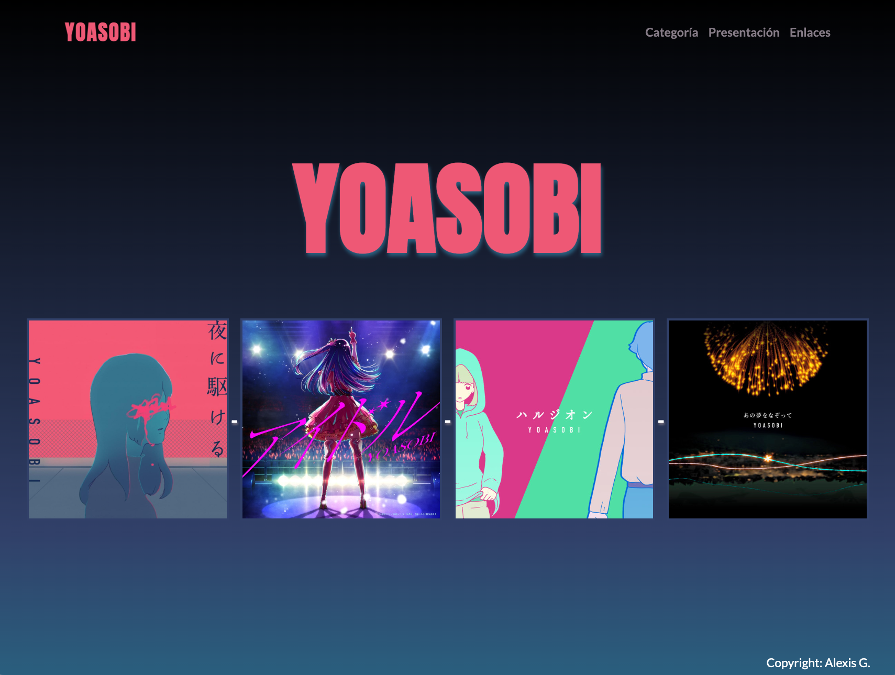
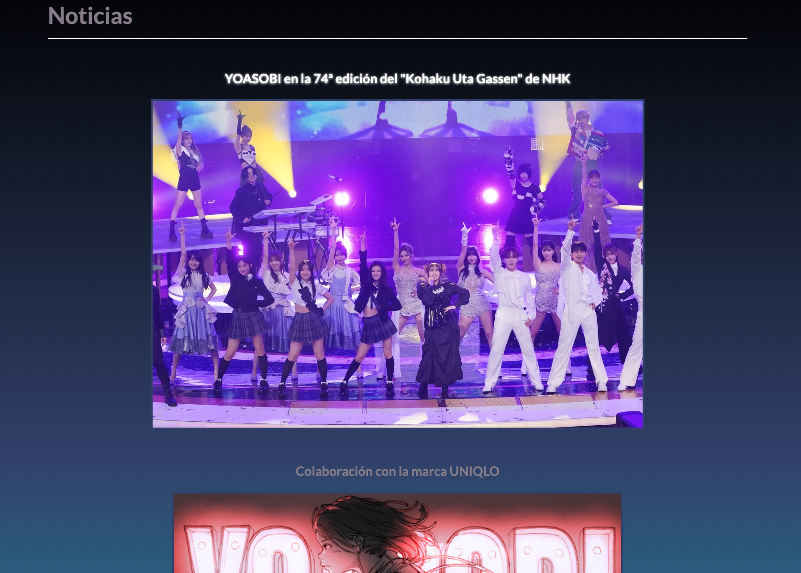
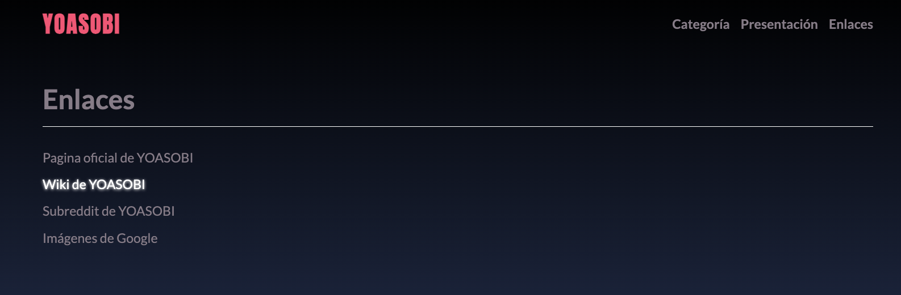

Presentación
La página web en general bastante minimalista influenciada por la página original del grupo.
En el header de cada fichero se encuentra la misma barra de navegación, el logo es un enlace que lleva a la página principal, y cada una de las secciones son enlaces directos a dichas secciones con un hover del ratón en ellos.
Así pues, la portada simplemente tiene el título de la banda en grande y debajo 4 imágenes de sus mayores éxitos
La página de categorías se divide en tres secciones; los miembros (es un dúo), las noticias, que contiene un enlace directo a la primera noticia con algunos detalles más, y una segunda noticia sin más, y finalmente una sección con un poco de la historia del grupo.
La sección de enlaces simplemente tienen la página principal de ellos mismos de la cual me he inspirado para hacer esta, la wiki del grupo que es de donde he sacado su historia, una página a un subreddit del grupo que contiene una publicación sobre los detalles de la noticia, y finalmente un enlace a Google que es de donde he conseguido las imágenes de toda la página facivon incluído.
El footer simplemente tiene mi nombre como autor de la página